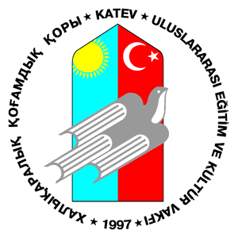

Slava Kim
: imslavko@gmail.com
: Slava
: @imslavko
: Homepage
I am a professional software developer, based in San Francisco. Have been coding since high school when I won multiple awards in world-class programming competitions. Having worked in a couple of startups, fresh out of school, I developed and contributed to a top-10 most-starred project on GitHub.
- Work Experience
-
Meteor Development Group San Francisco, CA - 2013-2015
 Core Developer. Engineer #5 (employee #9).
Worked on the main open-source product (Meteor framework) as well as the early
stages of the comercial hosting software.
Core Developer. Engineer #5 (employee #9).
Worked on the main open-source product (Meteor framework) as well as the early
stages of the comercial hosting software.Worked on the data synchronization from databases, contributed to the front-end framework. Led the development of integration with Apache Cordova, the project allowing Meteor developers to wrap their apps into Android and iOS shells in a single command. Shipped the Windows port.
Participated in the product discussions. Submitted and worked on multiple technical design proposals. Worked with, supported and communicated to the development community around the framework.
Represented the company on events. Gave various technical talks on meetups and conferences.
Gained expertise in: JavaScript, node.js, MongoDB, Apache Cordova.
-
Collections Labs Mountain View, CA - 2012-2013

A junior software engineer in a seed stage startup.
Developed the main product for Mac OS X in Objective-C. Also developed a Windows application (prototype in C#, final product in JS/HTML).
- Education
-
Massachusetts Institute of Technology Boston, MA - 2015-2019

In 2012 I took three years after high school to work in Silicon Valley startups. In 2015 I got admitted to MIT undergraduate program, Course 6.
-
Kazakh-turkish High School Karaganda, Kazakhstan - 2007-2012

In this boys-only boarding school on the edge of my hometown I picked up programming, started participating in programming competitions and have led two summers of coding camps for younger students.
- Skills and Interests
-
Development Tools
I worked on web-development frameworks. Contributed to the design of dynamic templating language. Worked on a system analyzing MongoDB queries, allowing to reduce the load on the database looking for real-time data notifications.
My side projects include: code assist tooling for text-editors, structured queries parsers, toy programming languages.
-
Code Analysis
Have learned OCaml and the theory of compilers from Stanford's Coursera class by Alex Aiken.
Developed a simple Lisp interpreter. Built a compiler for a toy object-oriented programming language (Decaf, part of the Stanford class) and code assist tooling for a JavaScript framework.
-
Distributed Systems interest
My experience in Distributed Systems is limited but I am eager to learn more and get my hands dirty.
Contributed to Galaxy, Meteor's distributed highly available hosting platform.
Have taken MIT's 6.033 online, learned and read about different things.
- Open Source Software
-
meteor/meteor 24 130
Being a Core Developer employed by Meteor Development Group, contributed more than 1300 patches (currently a top 3 contributor). Shipped major features. Maintained older projects. Reviewed submitted pull requests. Managed public issue tracker. Worked with the community.
Meteor is GitHub's top 10 most popular project of all time.
-
slava/tern-meteor 233
Tern for Meteor
A plugin for text-editors such as Vim, Emacs, Sublime Text and others. This plugin provides JavaScript code intellegence tools specific to the Meteor framework and its APIs.
Meteor Autocomplete for Sublime
A Sublime-Text package. Based on the Tern for Meteor, provides code intellegence, autocompletion of 3rd party packages, client/server autocompletion separation depending on the context. Other features, such as "jump to definition" or "go to documentation".
-
slava/meteor-gmail 36
A Meteor smart package that utilizes GMail API to poll data and provide soft real-time notifications when the set of emails matching the query changes.
Includes a parser for the GMail query language to parse messages. An example of a query:
from:me to:(bob OR bob@corp.com) -kittens. - Competitive Programming
-
International Olympiad in Infromatics 2011-2012

IOI is an annual algorithmic programming competition for high school students. More information in Wikipedia.
Full statistics is available on the official IOI site:
- Silver Medal in 2012 - Sermione, Italy
- Bronze Medal in 2011 - Pattaye, Thailand
-
TopCoder, CodeForces, Online Judges 2010-2012

TopCoder and CodeForces are world's most competitive algorithmic platforms. I have been active in years of my high school getting high ranks in the first division, consistently for several years.
Repository with all solution files on different websites and online judges: repo on GitHub (hundreds of solved algorithmic problems).
-
On-site competitions in Kazakhstan 2009-2012
For the 3 years of high school I have participated in 15 personal and team competitions, always achieving gold and silver medals. A list and a blog in Russian available here.
Coached top 30 students from the whole country for two summers. Developed an online course with videos and problem sets in association with the "Daryn" - National Scientific Pedagogical Center.